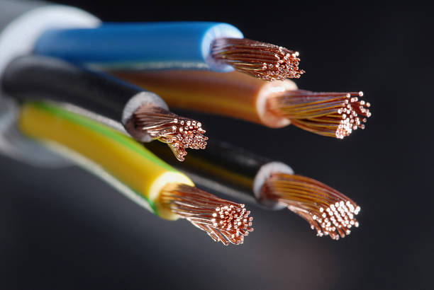

After high school, I want to study Computer Science. Just like how data can be stored in bits and bytes, I want to build knowledge piece by piece. With scalable systems and fault-tolerant networks, I’ll be ready to explore the universe of technology!
Hard drive and data storage (Unit 1)
Networking cables (Unit 2)
As technology grows, understanding cybersecurity threats is essential for safe navigation of the digital universe. Some common threats include:
To combat these threats, individuals and organizations must employ firewalls, antivirus software, secure passwords, and awareness of suspicious activity. Just like networks require fault tolerance and scalability, cybersecurity ensures data flows safely and systems remain operational in the vast digital galaxy. 🌌